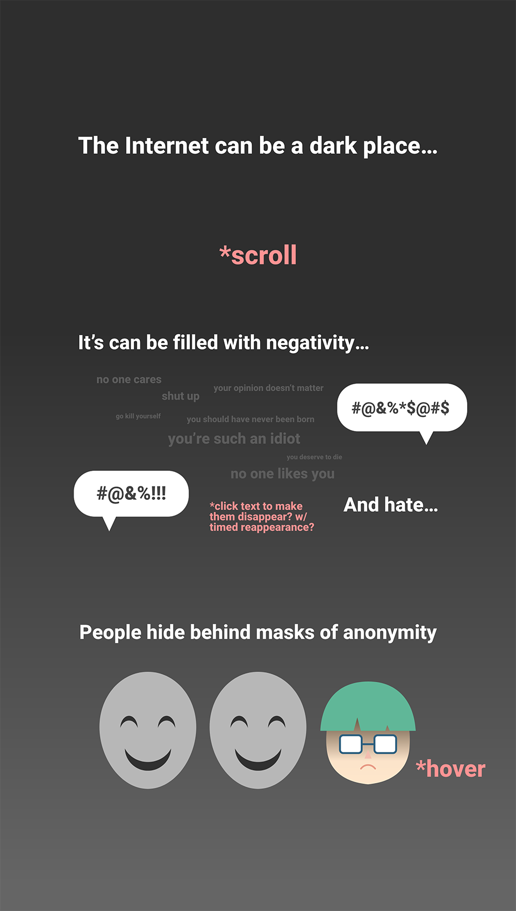
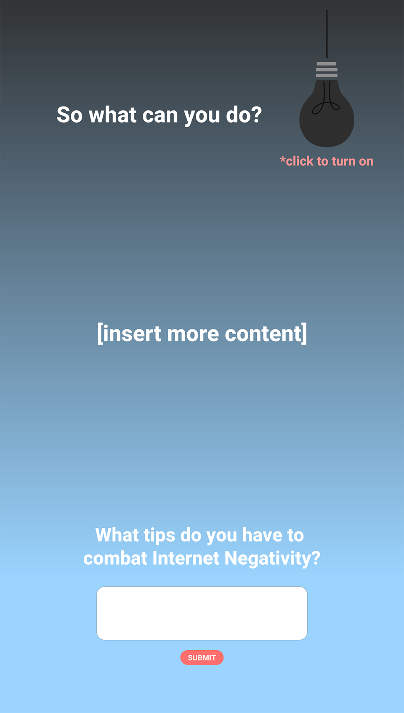

Given that I want to create a sort of interactive-storytelling-educational infographic that warns about internet negativity, visually, I want to keep the site simple and clean with scrolling as the main method of navigation, hence the length of my comps. In terms of color and composition, I want to start with a darker color scheme, reflecting the seriousness of the issue, and as the user scrolls downwards, color becomes more prominent. I want to end the interactive activity on a positive note with advice for users and a section that asks users to reflect on what they've learned.
  Return to Portal